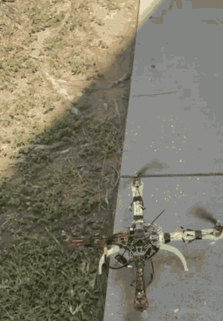
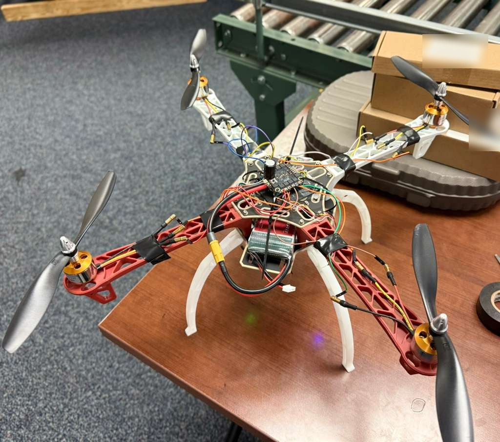

Drone Manufacturing
Students build and flight-test a small quadcopter from off-the-shelf parts and document each step so the next team can pick it up.
- Active
- 2026–present
- Manufacturing
- Robotics
- Drones
- Education

In plain English
Building a drone is a compact lesson in manufacturing: parts from different suppliers have to be assembled, wired, configured and tested until they work as one system. In this project, part of the lab's Manufacturing, Robotics and Automation line, students assemble a four-rotor drone (a quadcopter) from an off-the-shelf frame, motors, flight controller and radio link. It runs on Betaflight, open-source flight software, and the team keeps a dated log of every build step, test and fix so the next team can reproduce the work.
The team documented its first flights in June 2026. An early test lifted only a few inches and wobbled. A step-by-step check of motor order, propeller direction, controller orientation and radio settings got the drone off the ground and flying a week later. Later ground tests used the flight controller's built-in data logging to trace a remaining vibration to control tuning rather than to wiring or the radio link. The team has also connected a small onboard computer that reads live flight data, a first step toward sensor-assisted flight. The drone does not yet hover reliably, and tuning continues.
Main points
- The build uses an F450-class frame, a SoloGood F722 flight controller with a four-in-one motor speed controller, and an ExpressLRS radio receiver.
- The team keeps a dated build and test log and a plain-language setup manual for pairing the hand-held transmitter with the drone.
- Flight videos from June 22 and June 29, 2026 record the drone going from a wobbling hop to a short flight after configuration fixes.
- Onboard flight logs from September 2026 ground tests pointed to control tuning, not wiring or the radio link, as the source of a remaining vibration.
- An NVIDIA Jetson Nano companion computer now reads flight data from the controller in read-only mode; it does not yet control the drone.

People
- Erick C. Jones Jr., PhD, PEPrincipal Investigator · SEAR Lab directorin
Fall 2026 team: names to be added from the lab personnel sheet. Profiles marked in link to LinkedIn. More past and present lab members are on the SEAR Lab team page.